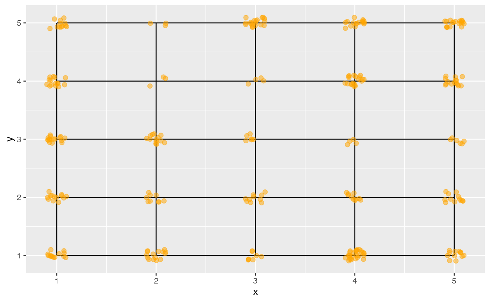

This function generates a grid of points to match the nodes from the self-organising map (SOM), and jitters points from the data so they can be seen relative to the grid. This allows the clustering of points by SOM to be inspected.
Value
data this object contains
original variables from the data
map1, map2 location of observations in 2D som map, jittered
distance distances between observations and the closest node
id row id of data
net this object contains
values of the nodes in the high-d space
map1, map2 nodes of the som net
distance distances between observations and the closest node
id row id of net
edges from, to specifying row ids of net to connect with lines
edges_s x, xend, y, yend for segments to draw lines to form 2D map
Examples
require(kohonen)
#> Loading required package: kohonen
#>
#> Attaching package: ‘kohonen’
#> The following object is masked from ‘package:mclust’:
#>
#> map
data(clusters)
c_grid <- kohonen::somgrid(xdim = 5, ydim = 5,
topo = 'rectangular')
c_som <- kohonen::som(as.matrix(clusters[,1:5]), grid = c_grid)
c_data_net <- som_model(c_som)
require(ggplot2)
ggplot() +
geom_segment(data=c_data_net$edges_s,
aes(x=x, xend=xend, y=y, yend=yend)) +
geom_point(data=c_data_net$data, aes(x=map1, y=map2),
colour="orange", size=2, alpha=0.5)
